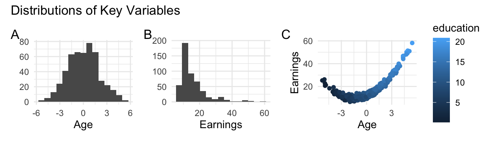

Lab 2: Description Using Models
This will be a descriptive subtitle.
Abstract
In this position, you can include the short abstract of your report.
Learning Objectives
- Articulate and motivate a research question aligned with description
- Discuss and justify how concepts are operationalized
- Correctly evaluate the large sample regression model assumptions
- Build a regression model that as fully as possible describes a question
- Evaluate both statistical and practical significance of results
Introduction
Description refers to the process of representing statistical patterns in a compact, human-understandable way, in order to gain insight. Although more attention is usually given to the alternate modes of prediction and explanation, description remains important in many domains, including economics, marketing, and political science, and policy. After all, before you can make predictions about behavior, you need to be able to describe the patterns of behavior! In this lab, you will generate a short regression analysis to investigate a question of description.
Your first task is to select a descriptive research question and a public data set that you can use to address it. To constrain the scale of the project, you must select a single X concept and a single Y concept. You will need to ensure that your data set includes variables you can use to operationalize both concepts.
Your research question must be purely descriptive. In a descriptive model, we seek to understand, quite simply, what a distribution is. You must therefore present reasons that someone would want to understand what the relationship between your outcome, \(Y\), and covariates \(Xs\) are. Among other things, this means that your introduction must explain why understanding the relationship in question is valuable.
Some classic examples of descriptive questions follow:
- What is the wage gap between people of different genders (Blau and Kahn 2017)? Understanding what the gap is is valuable as a measure of fairness in society.
- How much do people with different political leanings care about the economy (Conover, Feldman, and Knight 1987)? This information would be useful to design political campaigns.
- How much do consumers prefer local brands over national or global brands (Bronnenberg, Dhar, and Dubé 2009)? Answering the question could be useful to marketing teams.
A common error is to motivate the research question in terms of prediction or explanation. Here are two examples of this type of error:
- Can we target promotions for hotels more effectively if we know someone’s vacation budget? Since the objective requires an accurate prediction of hotel purchase across people with different vacation budgets, the task is really about building and deploying a predictive model. A descriptive question might be, “Is there a relationship between vacation budget and hotel choice?”
- Does “eating oatmeal” reduce the risk of heart attack? Since this objective involves manipulating something in the real world, it requires an explanatory model. A descriptive question might be, “What is the relationship between heart disease and genetics, diet, exercise, income, and education?”
As you can see, in many cases, answers to descriptive questions serves as a precursor to an active, intervention-based strategy where you would either (a) build a model for a predictive task; or (b) conduct an experiment for a causal task. You may think of description as revealing the “shape” of the relationship between your \(X\) and your \(Y\) variable, with transformations and additional model features and making this relationship human understandable.
Data
You must find you own public data source for this lab. Your data must meet the following requirements:
Data should be cross-sectional; that is, each person (or other unit) must have one row of data, not multiple measurements taken at different times. If you find a panel data set, which is a data set that has multiple observations for each unit, you may subset a single cross section for this lab. If you have a single measurement for each person, but different people are measured at different times, that is ok, but you will typically want to include a time trend or time fixed effects to account for how time periods are different from each other (talk to your instructor if this is the case for you).
We recommend that your data set should have at least hundreds of observations.1 A team can choose an interesting data set that is smaller than this, however, this will then require the team to assess and satisfy the more stringent CLM assumptions.
You should try to identify an outcome variable, \(Y\), that is metric with more than two levels. However, if there is an ordinal variable that you are interested in, you may ask your instructor for permission to use it. If using an ordinal variable, clearly highlight this limitation in your report.
You should identify a data set that contains enough \(X\) variables that you can investigate an interesting story. Many data sets have only categorical \(X\) variables, we find that this presents challenges for this assignment so you should strive to find data sets that have an expressive set of \(X\) variables that include as least some metric features.
If your data set is large enough, you should begin your process by splitting the data into an exploration set and a confirmation set. As a rough guideline, you might put 30% of your data into the exploration set, but make sure that both sets have a minimum of 100-200 rows of data. Use the exploration set to build your intuition, explore the data, and build your model specifications. Ideally, all modeling decisions - including rules for what data to code NA, how to transform variables, and what tests to run - are made using only the exploration set. Only after your report is nearly done, should you swap to the confirmation set and recalculate all the numbers in your report, including summaries, model coefficients, and p-values. Your discussion and conclusions should be based on these final numbers from your confirmation set.
Here are a few data sources to consider:
General Social Survey (GSS). Use the Data Explorer to search for variables, or see a list in the Quick Guide
IPUMS. This is a long-term effort conducted by the University of Minnesota to combine government reference-statistics across time. It contains ACS, CPS, Time Use, Higher Education, and more.
Behavioral Risk Factor Surveillance System (BRFSS). This is a huge effort conducted every year that interviews more than 400,000 people about their health behaviors and outcomes.
Pew Research Center. See the list of surveys on various topics
If you have a specific topic you are interested in, we encourage to find your own data that is not on the list!
Modeling
You are required to create at least two regression models aligned with the top-level goal of description.
- The first model should be the simplest credible model. The purpose of the model here is to provide a single number representing the average strength of the relationship without conditioning on other features. This models facilitates a test of the hypothesis that there is no overall relationship.
- Further models should investigate how the descriptive story adapts as you add additional \(X\) variables or transformations variables in the regression. The main purpose is to more closely describe the shape of the relationship in question, leading to more human understanding or insight. You may use transformations (e.g. logs, exponents and polynomials) to better capture the shape of the relationship, indicator variables (e.g. age > 18) to capture interesting discontinuities where they may exist, and interactions between variables to test conditional relationships.
For example, if you were to be investigating the gender wage gap, you might first estimate a model that examines the wages of people who identify as belonging to different gender groups. However, since you believe the story here is more interesting than an simple, overall difference in wages between gender groups, additional models might include additional measures for sector, experience, and education in order to tell a fuller picture of the wage gap.
Plots, Figures, and Tables
Since the goal of this report is describing a joint distribution, you should use the visualization and summarizing tools that are available to you to convey your meaning. All plots, figures, and tables should be certain to convey meaning, should have a descriptive caption, and should be written about in the prose of your report. We, personally, design our whole paper around the plots, figures and tables that we are going to include – drawing versions by hand that we insert in the page, and including “dummy tables” that are just squiggles of lines/text, but that have a known purpose.
For example, we might have a hand-drawn placeholder that is, “distribution of wages on the y-axis, grouped by years of education on the x-axis, and colored by gender identification,” and a squiggle-table that is “regression of wages on education and gender, including a test for interaction.”
Final Report
Your final report should document your analysis, communicating your findings in a way that is technically precise, clear, and persuasive.
Page limits:
- Main report: 5 pages
- Appendix: 2 additional pages
You must meet these page limits using standard pdf_document output in a .Rmd file, or in a documentclass: scrartcl in a .qmd file. (This assignment prompt has been generated as a scrartcl).
The two-page appendix is intended for extra information that will help your instructor assess your model building process. Please include the following elements:
- A Link to your Data Source. If you used specialized code to access your data, please include that here. Please make sure your instructor has the ability to access the data.
- A List of Model Specifications you Tried. We are interested in seeing how you arrived at your final model. In just a sentence, please provide a reason or something that you learned from each specification.
- A Residuals-vs-Fitted-values Plot. Please generate this plot for your final model that includes variable transformations. Your instructor will use this plot to assess how well you have captured the shape of the relationship between your X and your Y variable. For example, if there is a clear parabolic pattern in your residuals-vs-fitted plot, that is a signal that you should have included a square term.
Evaluation Criteria
We present the following criteria to guide you to a professional-quality report. Moreover, these criteria are also the ones we will use to grade your report. The descriptions below are copied directly from our grading rubric.
1. Introduction
An introduction that is scored in the top level has very successfully made the case for the study. It will have explained why the topic is interesting, and provided compelling reasons to care about not just the general area, but rather about every concept in the research question and the statistical results to be generated. The introduction will be engaging from the very first sentence, and create a logical story that leads the reader step-by-step to the research question. After reading the introduction, no part of the research question will appear arbitrary or unexpected, instead flowing naturally from the background provided.
2. Description of the Data Source
A report that is scored in the top level will describe the provenance of the data; the audience will know the source of the data, the method used to collect the data, the units of observation of the data, and important features of the data that are useful for judging the analysis.
3. Data Wrangling
A report that is scored in the top level on data wrangling will have succeeded to produce a modern, legible data pipeline from raw data to data for analysis. Because there are many pieces of data that are being marshaled, the reports that score in the top level will have refactored different steps in the data handling into separate files, functions, or other units. It should be clear what, and how, any additional features are derived from this data. The analysis avoid defining additional data frames when a single source of truth data would suffice.
4. Operationalization
A report that is scored in the top level on operationalization will have precisely articulated and justified the decisions leading to the variables used in the analysis. The reader will be left with a clear understanding of the concepts in the research question, and how they relate to the operational definitions, including any major gaps that may impact the interpretation of results. You should also list how many observations you remove and for what reasons. When there is more than one reasonable way to operationalize a concept, the report will explain the alternatives and provide reasons for the one that was selected. Note that there is often more than one way to operationalize a concept; we are less interested in whether you make the best possible choice, and more in how well you defend your decisions.
5. One or More Data Visualization(s)
This is a task of description, and one of the most effective ways to describe relationships between variables is through visualization.
You are required to include at least one plot in your main report that highlights the relationship between your \(Y\) and your \(X\) variables In your text, you should provide your interpretation of what this plot means, and link to the plot, as we have done in Figure 1.
Include a visual representation of your final model predictions on the plot. A report that is scored in the top level will have plots that effectively transmit information, engage the reader’s interest, maximize usability, and follow best practices of data visualization. Titles and labels will be informative and written in plain English, avoiding variable names or other artifacts of R code. Plots will have a good ratio of information to space or information to ink; a large or complicated plot will not be used when simple plot or table would show the same information more directly. Axis limits will be chosen to minimize visual distortion and avoid misleading the viewer. Plots will be free of visual artifacts created by binning. Colors and line types will be chosen to reinforce the meanings of variable levels and with thought given to accessibility for the visually-impaired. Your report will be free of “output dumps” - code output that has not been formatted for human-readability. Every single plot and table in the report will be discussed in the narrative of the report.
6. Model Specification
A report that is scored in the top level will have chosen a set of regression models that strongly support the goal of the study. Variables transformations will be chosen to inform the reader of the shape of the joint distribution, and will be human-understandable. A reason will be provided for the chosen variable transformations. Ordinal variables will not be treated as metric. All model specifications will be displayed in a regression table, using a package like stargazer to format your output. Displayed standard errors will be correctly chosen.
| Dependent variable: | |||
| earnings | |||
| (1) | (2) | (3) | |
| Age | 3.11*** | 0.54 | 0.97*** |
| (0.12) | (0.50) | (0.10) | |
| Age2 | 1.00*** | ||
| (0.01) | |||
| Education | 1.31*** | 1.03*** | |
| (0.25) | (0.05) | ||
| Intercept | 15.89*** | 2.85 | 1.72*** |
| (0.25) | (2.48) | (0.47) | |
| Observations | 500 | 500 | 500 |
| R2 | 0.56 | 0.58 | 0.98 |
| Adjusted R2 | 0.56 | 0.58 | 0.98 |
| Note: | p<0.1; p<0.05; p<0.01 | ||
7. Model Assumptions
A report that scores in the top-level has provided an thorough and precise assessment of the assumptions supporting the regression. The list of assumptions is appropriate given the sample size and modeling goals. Each assumption is evaluated fairly, and discussed defensively - without overstating how credible the assumption is or rendering a final up-or-down judgement on the assumption. The report will not miss any important violations of any assumption. Where possible, the report discusses the consequences for the analysis of a violated assumption.
8. Model Results and Interpretation
A report that scores in the top level will correctly interpret statistical significance, clearly interpret practical significance, and comment on the broader implications of the results. It may want to include statistical tests besides the standard t-tests for regression coefficients. When discussing practical significance, comment on both the direction and magnitude of your coefficients, placing them in context so the reader can understand if they are important. To help the reader understand your fitted model, you may want to describe hypothetical datapoints (e.g. a hypothetical person with 1 cat is predicted to spend $2400 on pet care. That rises to $3200 for a hypothetical person with 2 cats…).
9. Overall Effect
A report that scores in the top level will have met expectations for professionalism in data-based writing, reasoning and argument for this point in the course. It can be presented, as is, to another student in the course, and that student could read, interpret and take away the aims, intents, and conclusions of the report.
References
Blau, Francine D, and Lawrence M Kahn. 2017. “The Gender Wage Gap: Extent, Trends, and Explanations.” Journal of Economic Literature 55 (3): 789–865.
Bronnenberg, Bart J, Sanjay K Dhar, and Jean-Pierre H Dubé. 2009. “Brand History, Geography, and the Persistence of Brand Shares.” Journal of Political Economy 117 (1): 87–115.
Conover, Pamela Johnston, Stanley Feldman, and Kathleen Knight. 1987. “The Personal and Political Underpinnings of Economic Forecasts.” American Journal of Political Science, 559–83.
Footnotes
Hundreds? That sounds imprecise! Yes, this is on purpose. If we give a specific number, then teams fixate on this specific number. We just want you to be sure to have enough data that you can do interesting work!↩︎